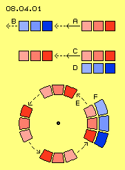
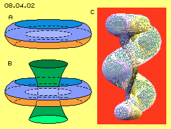

Freie Bewegung
Wir leben in der Teilchen-Welt und handhaben fortwährend irgendwelche Teile. Deren Bewegungsmöglichkeiten sind uns vertraut und wir wissen aus Erfahrung, was geht und was warum nicht möglich ist. Real steht hinter allen materiellen Teilchen jeweils ein Äther-Wirbel und dessen Struktur kann ziemlich freizügig durch den Äther wandern - sofern nicht ein anderer grober Äther-Wirbel den Weg verstellt. Diese relativ große Freizügigkeit ist gegeben, weil zwischen diesen Äther-Wirbeln in aller Regel ein weiter Zwischenraum gegeben ist.
Für das Verhalten des Äthers-an-sich, d.h. der Wirbel-Bewegungen selbst, sind einige der geläufigen Bewegungs-Formen nicht möglich. Im Äther gibt es diese Zwischenräume nicht, er ist ein homogenes Plasma, weist überall gleiche Dichte auf und ist somit nicht kompressibel. Äther selbst weist keine Wärme auf, also sind auch keine wärme-bedingten Bewegungen möglich. In den Kapiteln 02.02. bis 02.05 wurden diese Themen bereits ausführlich diskutiert, so dass hier nur kurz noch einmal auf einige Einschränkungen hinzuweisen ist.
Unmögliche Bewegungen

In Bild 08.04.01 sind Bereiche von Äther markiert, bei A drei benachbarte Ätherpunkte in verschiedenem Rot. Wenn diese sich im Raum nach links bewegen, müssen sich auch die blau markierten Ätherpunkte bei B nach links bewegen. Aber auch alle anderen benachbarten Ätherpunkte auf dieser Linie müssten sich entsprechend bewegen, theoretisch quer durch das ganze Universum. Im lückenlosen Äther kann es also keine lineare Bewegung geben - auch wenn sie in unserer Teilchen-Welt eine sehr verbreitete Form von Fort-Bewegung ist.
In der mittleren Zeile dieses Bildes bewegen sich bei C wiederum die roten Ätherpunkte nach links. Darunter ruhen bei D die blauen Ätherpunkte im Raum. Es findet also eine Relativ-Bewegung zwischen roten und blauen Nachbarn statt. Es gibt im Äther aber keine abgegrenzten Teile und damit keine Grenzflächen, entlang denen unterschiedliche Bewegungen statt finden könnten. Diese ´Scher-Bewegung´ bzw. das Gleiten von ´Teilen´ gegenüber anderen ist im Äther keine zulässige Bewegungsform - auch wenn das auf Ebene materieller Erscheinungen pausenlos vonstatten geht.
Unten in diesem Bild bei E ist skizziert, wie die roten Ätherpunkte im Kreis rotieren, dargestellt in vier Positionen. Der hellrot markierte Ätherpunkt bleibt dabei im Drehsinn immer vor den nachfolgenden. Bei F sind benachbarte Ätherpunkte blau markiert, die ruhend sind. Auch hierbei würden sich benachbarte Ätherpunkte voneinander entfernen. Auch das ist im lückenlosen Äther-Plasma unmöglich - auch wenn einzelne Räder und Getriebe mit vielen Rädern unserer Teilchen-Welt pausenlos rotieren. Die Wirbel-System materieller Teile können im Raum rotieren, sogar ganze Galaxien - aber der Äther selbst kann kein ´Räderwerk´ sein.
Loslassen
Ich verstehe durchaus, dass es ´schmerzhaft´ ist, wenn man sich eine ´Welt ohne Teilchen´ und sogar ohne die gängigen Formen alltäglicher Bewegungen vorstellen soll. Wir kennen die Aggregatzustände der Gase, Flüssigkeiten und Festkörper und wissen, dass sie aus einzelnen chemischen Elementen, also Teilchen bestehen. Fakt aber ist, dass noch niemals ein einziges, real existierendes Teilchen festzustellen war. Die ´Festigkeit´ materieller Teilchen ist eine Illusion. Warum also sollte der Hintergrund allen Seins aus abgegrenzten Teilchen bestehen? Unter bestimmten natürlichen Bedingungen tritt der Aggregatszustand eines Plasmas auf, aber auch technisch lässt sich dieser Zustand erreichen. Dessen Kennzeichen ist, dass darin keine abgegrenzten Teilchen mehr gegeben sind. Und genau in diesem Zustand eines homogenen Kontinuum ist der Äther - während alle anderen Aggregatzustände nur in der Teilchen-Welt auftreten können.
Ich kann durchaus verstehen, dass man den vertrauten Raum täglicher Erfahrungen nicht verlassen, also weiterhin ein ´Teilchen-Denker´ bleiben möchte. Ich kann allerdings nicht verstehen, warum Wissenschaftler so vehement im Zustand der ´Feld-Denker´ verharren, also in einer rein abstrakten Mathematiker-Welt arbeiten und die Frage nach dem konkreten Hintergrund allen Seins ausblenden. Einige Wissenschaftler beschäftigen sich durchaus mit dem Äther, aber entweder definieren sie die Eigenschaften ihres Mediums nicht exakt - oder es ergeben sich ´Zwitter-Hypothesen´.
Keine Basis

Da der ´Teilchen-Zoo´ der Quanten-Theorien unbefriedigend erscheint, suchen manche Forscher nach anderen ´Ur-Teilchen´ der Materie. Ausgehend von den bekannten ´Rauch-Ringen´ mit ihren erstaunlichen Eigenschaften, favorisieren einige Forscher den Ringwirbel als grundlegendes Bewegungsmuster.
In Bild 08.04.02 ist bei A diese ´Donat-Form´ skizziert. Zwei Kreisbewegungen sind darin kombiniert, woraus spiralige Bahnen mit mehr oder weniger steiler Anstellung resultieren. Roger Penrose fügt in bzw. um diesen Wirbelring noch mehrere ´Schalen´ hinzu, mit geschlossenen oder offenen ´Feldlinien´, wie bei B grün skizziert ist. Diese Elemente lassen sich dann virtuos kombinieren, um die chemischen Elemente und andere physikalische Erscheinungen darzustellen. Offen bleibt bei diesen Hypothesen weitgehend, was sich warum in dieser Form bewegen soll. Es wäre eine lange Liste zusätzlicher Bedingungen erforderlich, wenn diese Vorstellungen reale Erscheinungen repräsentieren sollten.
Völlig klar sind dagegen die Voraussetzungen für ´Torkados´ wie beispielsweise bei C, welche Gabi Müller konzipiert und als Ur-Form allen Seins benennt. Wie bei fraktalen Gebilden, z.B. dem bekannten ´Apfelmännchen´, ergibt sich dieses Muster aus einer relativ einfachen mathematischen Formel. Wenn die Parameter (z.B. Radien und Drehzahl überlagerter Kreisbewegungen) variiert werden, ergibt sich beispielsweise dieser gestreckte und verdrallte ´Donat´.
Dieser eindrucksvolle Wirbel ergibt sich also aus purer Mathematik - bleibt nur die Frage nach der realen Relevanz. Dieses schöne Beispiel zeigt, was per Programmierung einfacher Formeln zu erreichen ist. Andererseits ergibt sich daraus die gleiche Problematik, welche Max Planck anlässlich der Verleihung des Nobelpreises so über-deutlich ausführte: "... und da kommt jetzt die große Aufgabe, der Formel einen Sinn zu geben."
Reale Basis
Bitte lesen Sie noch einmal die Definition ´meines´ Äthers in den vorangehenden Kapiteln. Sie werden keine abstrakten Formeln finden, sondern nur konkrete physikalische Aussagen. Es sind keine weiteren Unterstellungen impliziert, vielmehr ergeben sich diverse Konsequenzen allein als logische zwingende Ableitung aus den wenigen Eigenschaften des Äthers. Leider muss man bei diesem Verständnis von Äther das Denken-in-Teilchen verlassen und einige Bewegungs-Möglichkeiten der gewohnten Teilchen-Welt sind nicht mehr gegeben.
Im Äther sind nicht möglich:
lineare Bewegung und Scher-Bewegungen,
Kreisbewegung im Sinne von Rotation
und alle Formen von Einstülpung,
Verdichtung und Expansion inklusiv
darauf basierender Schwingungen,
Bewegung aufgrund von Wärme / Kälte wie auch
Kondensation oder Kristallisation und
andere Änderungen des Aggregatzustandes.
|
Dafür werden bislang ungeklärte Phänomene nun verständlich. Es wird leicht erkennbar sein, dass die ganze Vielfalt der Erscheinungen auf nur ganz wenigen, prinzipiellen Bewegungsmustern basiert. Im folgenden Kapitel werden die zwangsläufig auftretenden Notwendigkeiten für Bewegung von Äther im Äther aufgezeigt.